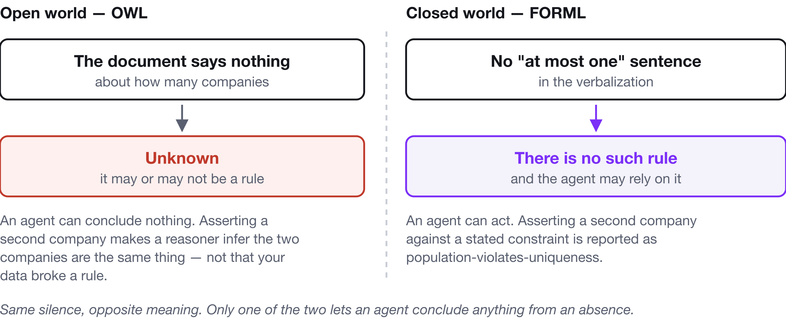
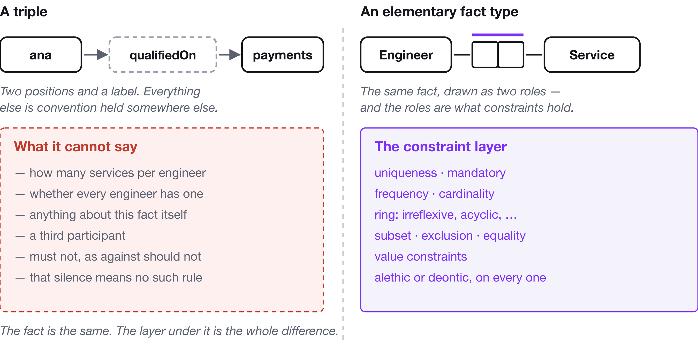
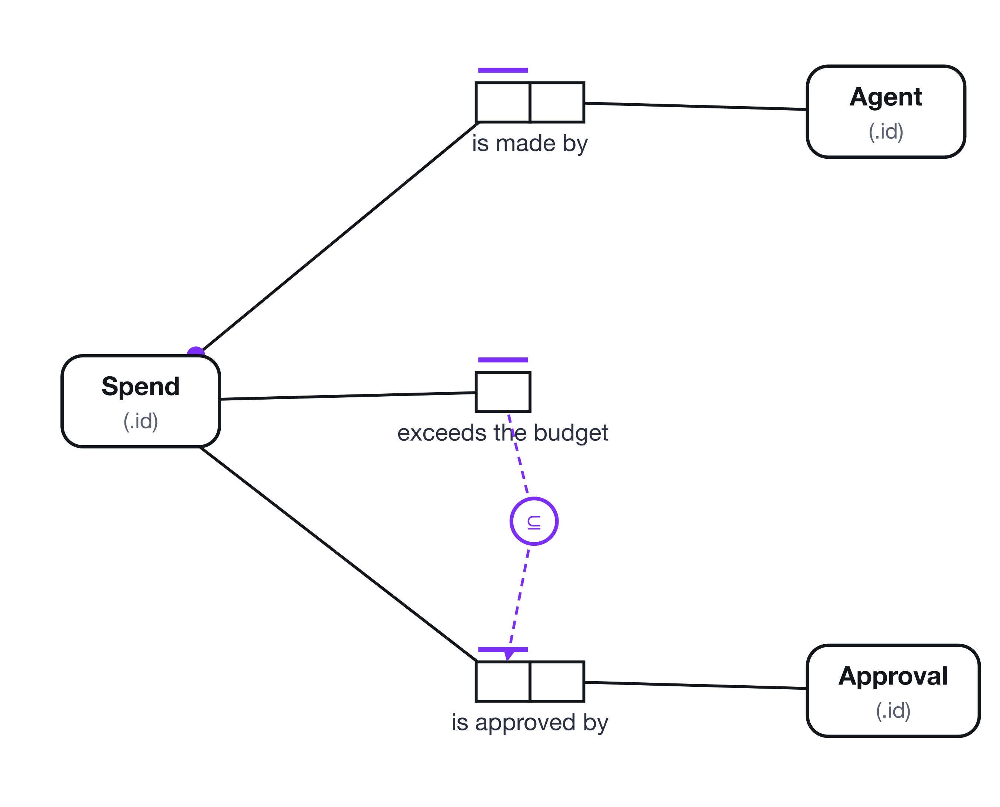
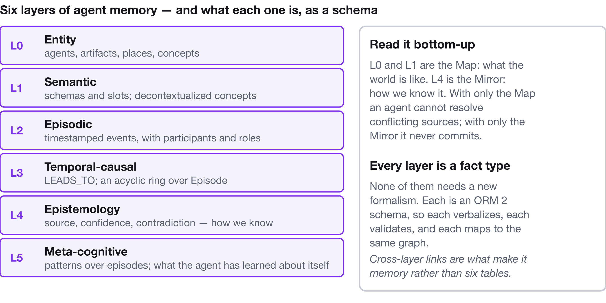

An Ontology Is Not a Fact Layer
Your ontology says what exists. Your agent needs to know what is allowed. Those are different artifacts, and the gap between them is where agents quietly go wrong.
Two teams tell me they have solved agent knowledge. One has an ontology — classes, properties, a reasoner, a graph with a few million triples. The other has a schema — tables, constraints, a validator that runs in CI.
Both are right about their own half. Neither has what an agent needs, and the reason is the same in both directions: an ontology states what things are, and a schema states how they are stored. Neither states what is allowed.
That third thing is the fact layer. It is not a new kind of knowledge graph and it is not a stricter schema. It is the conceptual layer both of the others assume somebody wrote down, and almost nobody did.
The question your agent is actually asking
Watch what a coding agent needs when it touches your domain. Not what it retrieves — what it needs in order to be right.
Can a customer have two active subscriptions?
Is company_id optional because the domain permits it, or because the column
was added in v2?
If I relax this rule for contractors, what else breaks?
Is "spend over $50 needs approval" something the system must prevent, or something it must be able to record a violation of?
Every one of those is a question about which populations are legal. Not about which classes exist, not about how rows are laid out. And an agent that gets one wrong does not fail loudly — a hallucinated function name is caught by the compiler on the next run, a hallucinated rule is caught by nothing, ever. It is not an output that gets checked; it is a premise, and premises propagate into the migration, the fixture, the validation that never got added, and from there into what the next agent infers next month with more supporting evidence than the belief had the first time.

What an ontology is genuinely for
I want to be fair here, because the RDF/OWL family is the part of the field taking the same problem seriously, and in places it does the job better than anything else available.
An ontology is built to classify, integrate and infer. You have data from six
sources that call the same thing by five names; an ontology gives you shared
identity and a vocabulary they can all map into. You want to conclude that a
Manager is a Person without writing that rule six times; a reasoner does it.
You want a vocabulary that survives being merged with someone else's; the
open-world assumption is exactly the right design for that, because a merge
should not turn silence into a contradiction.
That is real work, done well. It is also, precisely, not the job of stating what a specific system permits — and the mismatch is not cosmetic.
Open world: the same silence, the opposite meaning
Assert that a person works for two companies under owl:maxCardinality 1. A
reasoner does not raise an error. It concludes the two companies must be the
same individual. That is correct OWL, and it is exactly the wrong behaviour for
a fact layer, where you wanted to be told your data contradicts your rule.
Then the deeper one. Under the open-world assumption, the absence of a statement means unknown. If nothing in your ontology says a customer may have at most one active subscription, OWL's position is that we do not know whether such a rule exists. A fact layer's position is that there is no such rule.

For an agent, "unknown" is not actionable and "there is no such rule" is. This is the single highest-leverage difference in the whole comparison, and it is not a defect in OWL — it is a principled decision that silence should carry no information, made by people solving a different problem. Only one of the two readings lets an agent conclude anything from what the document does not say.
A triple is a binary with no constraint layer
Subject, predicate, object. Two positions and a label.
Anything with three participants — this actor performed this action on this resource at this time — needs an intermediate node: RDF reification, an n-ary pattern, or RDF-star. That is the same move ORM calls objectification, arrived at by necessity rather than by design, which is why the encodings look alike at the end and the intent behind them does not.

The fact is the same in both. The layer underneath it is the whole difference: one has a first-class place to say mandatory, at most one, at least two, never itself, only if, and one does not.
And SHACL — the closest relative, and a good one
SHACL is the honest counterexample and deserves better than a strawman. It is
closed-world. It validates rather than infers. It expresses cardinality and value
ranges, and sh:sparql reaches most of the rest. If you already have an RDF
graph, SHACL is the right tool and I will not talk you out of it.
The differences are narrower than with the rest of the field, and they are still the ones that matter:
- SHACL constrains the shape of a graph — a logical artifact. By the time
you write a
sh:NodeShape, the decision about what is a node and what is a property has already been taken. That decision is exactly what a conceptual model defers. - There is no elementarity test. Nothing tells you a shape is quietly doing two jobs, which is where the interesting modelling mistakes live.
sh:severityis not modality. It changes how loudly the validator complains, not whether the rule is a necessity or an obligation, and nothing downstream reads it.- It does not verbalize. A
sh:NodeShapeis not something you put in front of the person who knows whether the rule is right — and unread formal languages are how this discipline died the first time.
The gap: two half-layers, and the hole between them
Sort your artifacts by two questions — does it carry meaning a human can argue with? and does it enforce a rule against real data? — and the shape of the problem falls out.
| Weak on enforceable rules | Strong on enforceable rules | |
|---|---|---|
| Rich semantics | RDF, RDFS, OWL, most enterprise ontologies | ← the empty quadrant |
| Thin semantics | AGENTS.md, wikis, vector memory | SQL DDL, JSON Schema, types, SHACL |
The bottom-right is full of things that enforce rules about a representation.
A JSON Schema constrains a document, so "no two people share an email address"
is unwritable in it — not because the syntax is missing but because the subject
of the sentence is not present; the schema is looking at one person and has no
access to the others. A NOT NULL enforces a rule about a column. A
sh:NodeShape enforces a rule about a graph shape.
The top-left is full of things that carry meaning but decline to enforce it, by design.
The empty quadrant is the fact layer: rules stated about the domain, checkable against data, readable as sentences. That is not a gap anybody left by accident. It is a gap left because the discipline that filled it went out of fashion around 2005.
Why conceptual models close it
Object-Role Modeling — ORM, and specifically Halpin's ORM 2 — is a fifty-year-old answer to a problem we have just started calling new. It sits at the conceptual level: it has not yet decided what is a table, a column, a node or a property.
That matters more than it sounds, because the three levels get conflated constantly:
- Physical — files, indexes, partitions.
- Logical — tables and columns, or node labels and relationship types. This is where most teams' only written artifact lives. SHACL, DDL, GraphQL SDL and property-graph schemas are all here.
- Conceptual — what the domain is, independent of how it is stored, and statable without deciding.
An agent asked a conceptual question about a logical artifact is doing archaeology. That is the whole failure mode, in one sentence.
Facts, not attributes
ORM describes a domain as elementary facts: Person works for Company,
Person has Skill. Facts carry no attributes at all.
That sounds like a restriction and is in fact the entire mechanism. An attribute is a place a decision can hide. Remove the hiding place and every decision about a fact has to surface as an explicit constraint — mandatory, uniqueness, frequency, value, subset, exclusion, ring, cardinality — each one an object with an identity, roles, a modality and a sentence. Not an annotation on a type. A thing that can be diffed, counted, cited and argued with.
And because constraints are claims about populations rather than about documents or instances, uniqueness and frequency and ring constraints can exist at all. That is the boundary JSON Schema cannot cross, and it is the boundary the agent's hardest questions sit on the far side of.
Modality, which almost nothing else has
"Spend over the budget must be approved" and "spend over the budget should be approved" are different rules, and an agentic system that cannot tell them apart cannot audit itself.
The first is alethic — it cannot be otherwise, and it becomes a NOT NULL or
a foreign key. The second is deontic — it should not be otherwise, but the
system must be able to store the violation, because an approval process that
cannot record an unapproved spend has no work to do.

Model a deontic rule as alethic and your system becomes incapable of representing the thing it exists to detect. No other format in the comparison scores anything on this question.
It reads back as a sentence
Every constraint verbalizes. Not documentation generated beside the model — the model rendered:
It is possible that some Person works for some Company.
Each Person works for exactly one Company.
It is necessary that the possible values of Status are {active, paused, ended}.
It is necessary that no Incident is related to itself in "Incident duplicates Incident".
Each Person is exactly one of: Employee or Contractor.
It is obligatory that if some Spend exceeds the budget
then some Spend is approved by some Approval.
The surface an agent parses is FORML — the Formal Object-Role Modeling Language — and it has a closed vocabulary of fifteen forms. Not a style. A finite list.
This was designed in the 1970s and 80s for an entirely human reason: a schema a business expert cannot read is a schema nobody validated. Nobody planned for it to be the ideal input format for a language model. It is, and the properties that make it so are the same ones — natural language, closed vocabulary, every rule stated, nothing implied by an attribute.
The corollary is the one that does the work: a rule that is not in the text is not in the model. Full stop, closed world, no reasoner required. Absence is information, and an agent can act on it.
The wider picture, literally
Here is the part that surprises people who expect the fact layer to be a retrieval source. It is not. It does not get chunked, and it does not get embedded.
A domain that occupies forty tables and several thousand lines of DDL is a few hundred FORML sentences. That fits in a context window whole.

Which removes an entire class of failure rather than mitigating it. Retrieval finds text similar to the query, and nothing in that pipeline establishes that what came back is true, current, or complete. A design doc from 2021 describing a rule changed in 2023 scores just as well as a correct one. Silence looks identical to permission. And you get chunks, not a domain — but constraints interact: a mandatory role plus a uniqueness constraint means exactly one; drop the mandatory and the same fact type means at most one. Reasoning about a rule you retrieved without the rule you did not is how you get an answer that is locally plausible and globally wrong.

Give the agent all of it at once and the interactions are in front of it. That is the wider picture: not more context, but complete context, small enough to be complete.
The model is also grounded. Sample populations live in the same file, so the rules arrive with worked examples in the same vocabulary — and a population can contradict a constraint you just drew, which is one of only two mechanisms standing between you and a well-formed lie. (The other is a domain expert reading a sentence. Both are cheap. Neither is automatic.)
And a quoted sentence is checkable. When an agent tells you "the model says each Person works for exactly one Company", that is a claim about a file you can grep — not a paraphrase of something it half-remembers from a wiki.
Where this actually runs
None of the above is worth much as philosophy. It is worth something as a toolchain, which is why I built Factum — an ORM 2 editor, CLI and MCP server for VS Code.
The editor draws ORM 2 diagrams and verbalizes them as you go, so the formal artifact is a by-product of an act of modelling a domain expert can watch and correct in real time. That is the only reason formal languages ever survive.
The CLI is the part that goes in CI:
| Command | What it does |
|---|---|
factum validate | Checks the model, and reports where your sample data contradicts a constraint you drew |
factum verbalize | Prints the domain as FORML sentences — pipe it into .agent/domain.md |
factum ddl / factum graph | Generates relational and property-graph schemas from the model |
factum diff | Renders a schema change as sentences a reviewer can read |
factum drift | Compares the model against a production pg_dump and says where reality moved on without you |
factum convert --to ossie | Emits an Apache Ossie ontology — the conceptual layer travels |
The MCP server gives Claude Code, Copilot or Cursor eight tools over the model — seven read-only and one guarded write — with one line of config:
{ "mcpServers": { "factum": { "command": "factum-mcp" } } }
The guarded write is the load-bearing part of the design. apply_model validates
before it writes and refuses a model with blocking errors:
Refused: the model has 2 blocking error(s).
error: [uniqueness-too-narrow] An internal uniqueness constraint on
"AuditEvent records that Actor performed Action on Resource" spans 1 of 4 roles.
An agent can be wrong. That is expected, and no amount of prompting changes it. What matters is that it cannot quietly commit an incoherent schema. The failure mode you are defending against is not "the agent proposes something bad"; it is "the agent proposes something bad and nothing notices until it is a migration".
Here is the difference on the same repository with the same prompt. Without the fact layer:
> add support for contractors who work for more than one company
// Looked at: schema.sql, Person.ts
- I'll add a `company_id_2` column
- ...or a join table, if you prefer?
- Note: existing rows assume one company; I can't tell whether that was a rule
or just the data.
With it:
> add support for contractors who work for more than one company
// verbalize_model, read_population
- "Each Person works for exactly one Company" is a mandatory role plus a
uniqueness constraint — a stated rule, not an accident of the data.
- Contractor and Employee are already subtypes of Person, so I moved the
uniqueness onto Employee rather than relaxing it for everyone.
validate_model passes.
- Diff for review:
- Each Person works for at most one Company.
+ Each Employee works for at most one Company.
The second answer is not a smarter model. It is the same model with the constraint in front of it, and a validator that would have caught it had it relaxed the rule for everyone.
And nothing here calls a language model. Factum's verbalizer, validator and mappers are deterministic code that would have worked identically in 2005. The agent is your agent, running where you already run it, reading a file you own.
You do not have to choose
The practical arrangement is not a competition between a fact layer and your ontology or your graph. It is a source and its renderings:
| Artifact | Generated from the model by |
|---|---|
| Relational schema | factum ddl |
| Property-graph schema | factum graph |
| Conceptual ontology (Apache Ossie) | factum convert --to ossie |
The domain half of AGENTS.md | factum verbalize |
| Test fixtures | factum verbalize --population |
| A review comment on a schema change | factum diff |
| A CI check against production | factum drift |
Nothing on that list is a new artifact you have to maintain. They are artifacts you already maintain, with the rule moved to the one place able to state it and the rest derived. Keep OWL for integration and inference, where it is excellent. Keep SHACL for validating the graph you ship. Author neither by hand.
And keep your AGENTS.md — it is the highest-leverage file most teams have. Just
split it in two and generate the half that can be generated:
factum verbalize model/domain.orm.json > .agent/domain.md
leaving the hand-written half for what only a human can write, plus one line making the relationship explicit:
The conceptual schema in model/domain.orm.json is authoritative for domain
rules. Read it before answering questions about what the system means.
Without that line, the fact layer is a file nobody reads. Agents reconcile sources by averaging unless told not to.
Where a fact layer does not help
Six situations. If you are in one of them, do something else.
- The domain has not been decided. Modelling an undecided domain produces fiction with a validator attached — worse than a wiki page, because the wiki page does not look authoritative. If nobody can give you a real example of a fact type, it does not exist yet.
- The prototype changes daily. The cost is paid at authoring time and returned over the life of the schema. A schema with no life expectancy returns nothing.
- The model goes stale. The serious one, and worse than having no model,
because people trust it. It is also what killed conceptual modelling as a
discipline the first time around.
factum driftin CI is not optional; it is the thing that makes everything else defensible. - The rule is behavioural. "Retry three times with backoff" is not a claim about which populations are legal, and pretending otherwise produces models with fake fact types in them.
- The agent has the model and ignores it. One line of project instruction fixes it; without that line, see above.
- The model is confidently wrong. ORM makes claims explicit; it does not make them correct. A wrong constraint stated explicitly is worse than no constraint for exactly as long as it takes one domain expert to read the sentence — which is the entire design.
The book
I wrote Fact-Based Agents: ORM 2, FORML and Factum for agentic memory because the argument above is one chapter and the other twenty-two are what makes it usable.
Six parts: the case for a fact layer, with an honest format-by-format comparison
against JSON Schema, types, OWL, SHACL, property-graph schemas, AGENTS.md and
vector memory, scored on eight questions; the ORM 2 notation in full, about a
dozen marks, every one drawn beside the sentence it generates; Halpin's
seven-step design procedure worked end to end, with six named anti-patterns and a
chapter on sample populations; the Factum toolchain in depth; three real schemas
modelled properly — a six-layer agentic memory architecture, a promise graph for
multi-agent coordination where rejections are first-class, and an audit log whose
hash chain is stated as a constraint rather than assumed by the code that writes
it; and interoperability with NORMA, FBM, Apache Ossie and UMS.

Some numbers, because they are what I would want to know:
- 73 figures, every ORM diagram rendered by Factum's own renderer from a model file that ships with the book.
- 79 downloadable models carrying 1,069 sample facts, in the exact layout the text prints — a path quoted in a chapter is the path you have after cloning.
- 63 exercises across three chapters, built around one on-call rota case study running through four chapters. Every expected validator error is quoted verbatim from real output and asserted by the build; every answer model validates clean. Ten models are deliberately wrong, and four of those validate clean and are still wrong — which is where every interesting modelling mistake lives.
- A benchmark harness for the book's central claim: two question sets, three conditions including a prose-documentation control, a scorer reporting confident errors and correct declines separately, and a citation check that verifies mechanically whether a constraint an agent quoted actually exists. The book contains the harness and says plainly that it does not contain the study.
If you have read Metagraph for AI Agents, this is its counterpart rather than its sequel. That book asks how to represent agent knowledge — hypergraphs, reification, six layers of memory. This one asks how to specify and check it.
Read the free sample → Get Factum → The models on GitHub →
You do not need prior ORM. You do need to have built a knowledge layer and watched an agent ignore it.